1. Ube Brownies
2. Origin:
The place of origin for Ube Brownies is: Philippines
3. Source
4. Category:
Ube Brownies are a dessert.
5.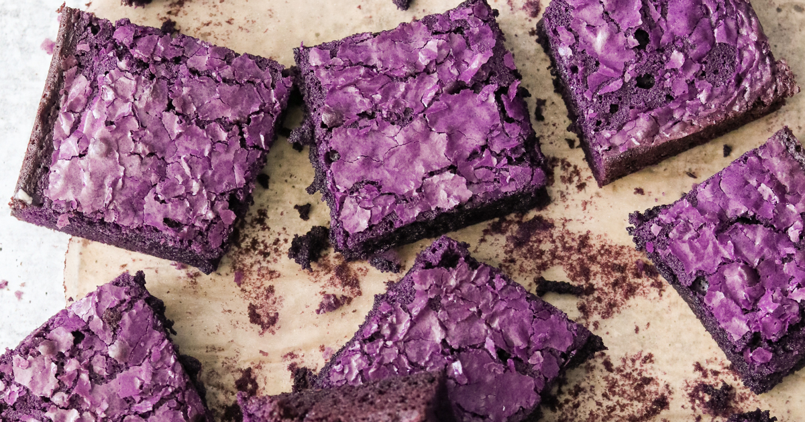
6. ube.jpeg
7. Ube Brownies are one of my favorite thing to bake. I first found this recipe when my friend brought in his version of Ube Brownies at a Friendsgiving party. Ever since then, I have been obsessed with these baked goods. I try to make this dish for my friends whenever we have any gathering that requires us to bring our own food. - Devin
8. Ingredients
- 1/2 cup butter
- 1/2 cup white sugar
- 1/2 cup brown sugar
- 2 eggs
- 1 teaspoon vanilla extract
- 1 cup all-purpose flour
- 1/2 cup unsweetened cocoa powder
- 1/2 teaspoon salt
- 1/2 teaspoon baking powder
- 1/2 cup ube halaya
- 1/2 cup white chocolate chips
9. Recipe Steps
- Step 1: Preheat the oven to 350 degrees F (175 degrees C). Grease an 8x8-inch baking pan.
- Step 2: Melt butter in a saucepan over medium heat. Remove from heat and stir in white sugar and brown sugar. Add eggs and vanilla extract; mix well.
- Step 3: Combine flour, cocoa powder, salt, and baking powder in a bowl. Add to the butter mixture; mix until well combined. Fold in ube halaya and white chocolate chips. Pour batter into the prepared pan.
- Step 4: Bake in the preheated oven until a toothpick inserted into the center comes out clean, 25 to 30 minutes. Cool completely before cutting into squares.
10. Additional Food Images
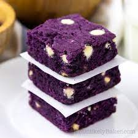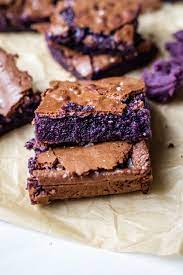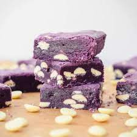
11. ube1.jpeg
12. Three Ube Brownies with white chocolate chips stacked on top of each other with sheet paper between them.
13. ube2.jpeg
14. Ube Brownie with chocolate top and gooey ube insides.
15. ube3.jpeg
16. Three Ube Brownies with white chocolate chips stacked on top of each other with a lot of white chocolate chips on the table.
17. Devin & Mia
1. Chasiubao
2. Origin:
The place of origin for Chasiubao is: China
3. Source
4. Category:
Chasiubao is a main dish.
5.
6. chasiubao.jpeg
7. Chasiubao is one of my favorite things to order for the table at dimsum. Whenever I am in Toronto, I typically get dimsum at least once, so I'll stuff my face with a lot of chasiubao. - Devin
8. Ingredients
For the steamed cha siu bao dough:
- 1 teaspoon active dry yeast
- 3/4 cup warm water
- 2 cups all-purpose flour
- 1 cup cornstarch
- 5 tablespoons sugar
- 1/4 cup canola or vegetable oil
- 2 1/2 teaspoons baking powder
- 1-2 teaspoons water (optional)
For the steamed cha siu bao filling:
- 1 tablespoon oil
- 1/3 cup shallots or red onion (finely chopped)
- 1 tablespoon sugar
- 1 tablespoon light soy sauce
- 1 1/2 tablespoon oyster sauce
- 2 teaspoons sesame oil
- 2 teaspoons dark soy sauce
- 1/2 cup chicken stock
- 2 tablespoons all purpose flour
- 1 1/2 cups Chinese roast pork (cha siu, diced)
9. Recipe Steps
- Step 1: In the bowl of an electric mixer fitted with a dough hook attachment (you can also just use a regular mixing bowl and knead by hand), dissolve the yeast in the warm water. Sift together the flour and cornstarch, and add it to the yeast mixture along with the sugar and oil. Turn on the mixer to the lowest setting and let it go until a smooth dough ball is formed. Cover with a damp cloth and let it rest for 2 hours.
- Step 2: While the dough is resting, make the meat filling. Heat the oil in a wok over medium high heat. Add the onion and stir-fry for a minute. Turn heat down to medium-low, and add the sugar, soy sauce, oyster sauce, sesame oil, and dark soy. Stir and cook until the mixture starts to bubble up. Add the chicken stock and flour, cooking for a couple minutes until thickened. Remove from the heat and stir in the roast pork. Set aside to cool. If you make the filling ahead of time, cover and refrigerate to prevent it from drying out.
- Step 3: After your dough has rested for 2 hours, add the baking powder to the dough and turn the mixer on to the lowest setting. At this point, if the dough looks dry or you're having trouble incorporating the baking powder, add 1-2 teaspoons water. Gently knead the dough until it becomes smooth again. Cover with a damp cloth and let it rest for another 15 minutes. In the meantime, get a large piece of parchment paper and cut it into ten 4x4 inch squares. Prepare your steamer by bringing the water to a boil.
- Step 4: Now we are ready to assemble the buns: roll the dough into a long tube and divide it into 10 equal pieces. Press each piece of dough into a disc about 4 1/2 inches in diameter (it should be thicker in the center and thinner around the edges). Add some filling and pleat the buns until they're closed on top.
- Step 5: Place each bun on a parchment paper square, and steam. I steamed the buns in two separate batches using a bamboo steamer (be sure the boiling water does not touch the buns during steaming process). Once the water boils, place the buns in the steamer and steam each batch for 12 minutes over high heat.
10. Additional Food Images
 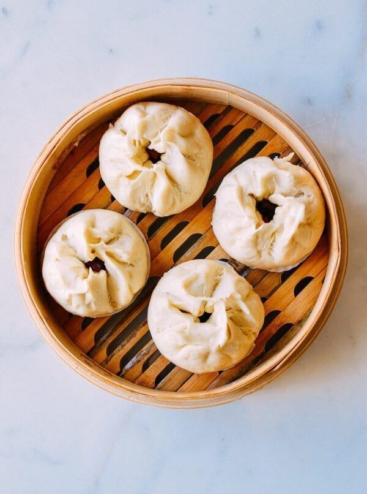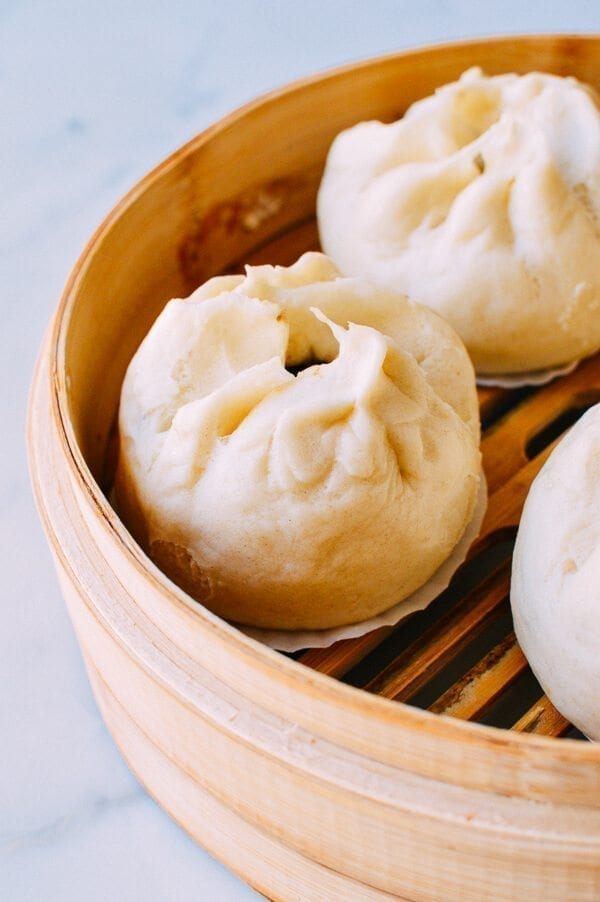
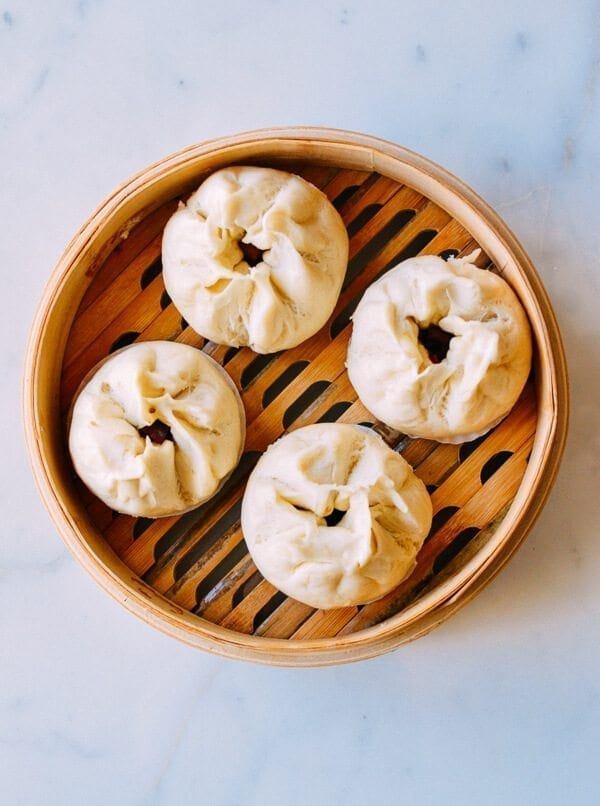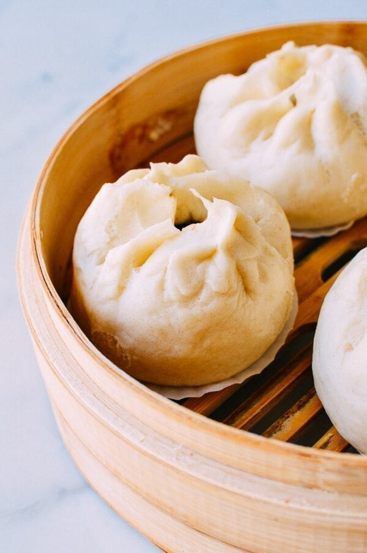
11. chasiubao1.jpeg
12. Four chasiubaos with one out the basket and some pork poking out.
13. chasiubao2.jpeg
14. Four chasiubao buns from a bird's eye view.
15. chasiubao3.jpeg
16. Showing a chasiubao bun from the side.
17. Devin & Mia
1. Chocolate Chip Cookies
2. Origin:
The place of origin for Ube Brownies is: United States of America
3. Source
4. Category:
Chocolate Chip Cookies are a dessert.
5.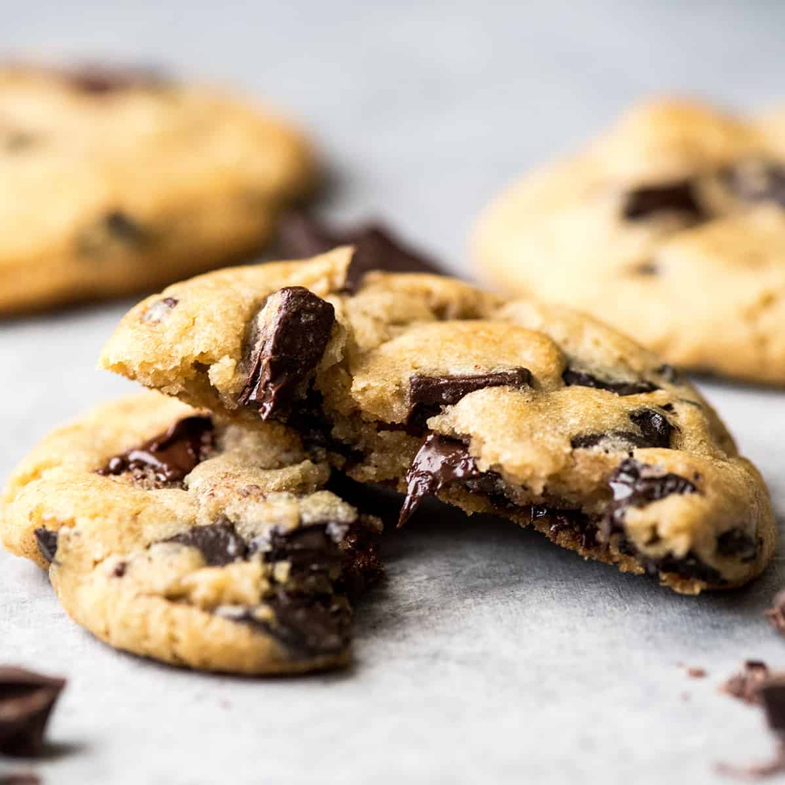
6. cookie.jpeg
7. Chocolate Chip Cookies are a classic. I added this because when in doubt, cookie it out. My go-to dessert will always be these round circles of joy. - Devin
8. Ingredients
- 1 cup salted butter softened
- 1 cup granulated sugar
- 1 cup light brown sugar packed
- 2 teaspoons pure vanilla extract
- 2 large eggs
- 3 cups all-purpose flour
- 1 teaspoon baking soda
- 1/2 teaspoon baking powder
- 1 teaspoon sea salt
- 2 cups chocolate chips (14 oz)
9. Recipe Steps
- Step 1: Preheat oven to 375 degrees F. Line three baking sheets with parchment paper and set aside.
- Step 2: In a medium bowl mix flour, baking soda, baking powder and salt. Set aside.
- Step 3: Cream together butter and sugars until combined.
- Step 4: Beat in eggs and vanilla until light (about 1 minute).
- Step 5: Mix in the dry ingredients until combined.
- Step 6: Add chocolate chips and mix well.
- Step 7: Roll 2-3 Tablespoons (depending on how large you like your cookies) of dough at a time into balls and place them evenly spaced on your prepared cookie sheets.
- Step 8: Bake in preheated oven for approximately 8-10 minutes. Take them out when they are just barely starting to turn brown.
- Step 9: Let them sit on the baking pan for 2 minutes before removing to cooling rack.
10. Additional Food Images
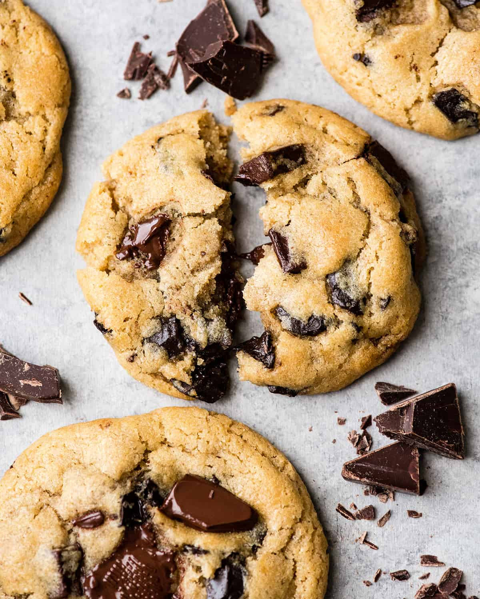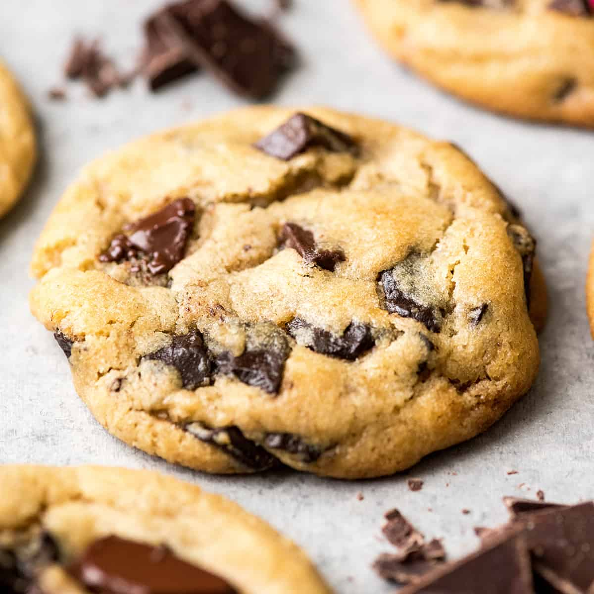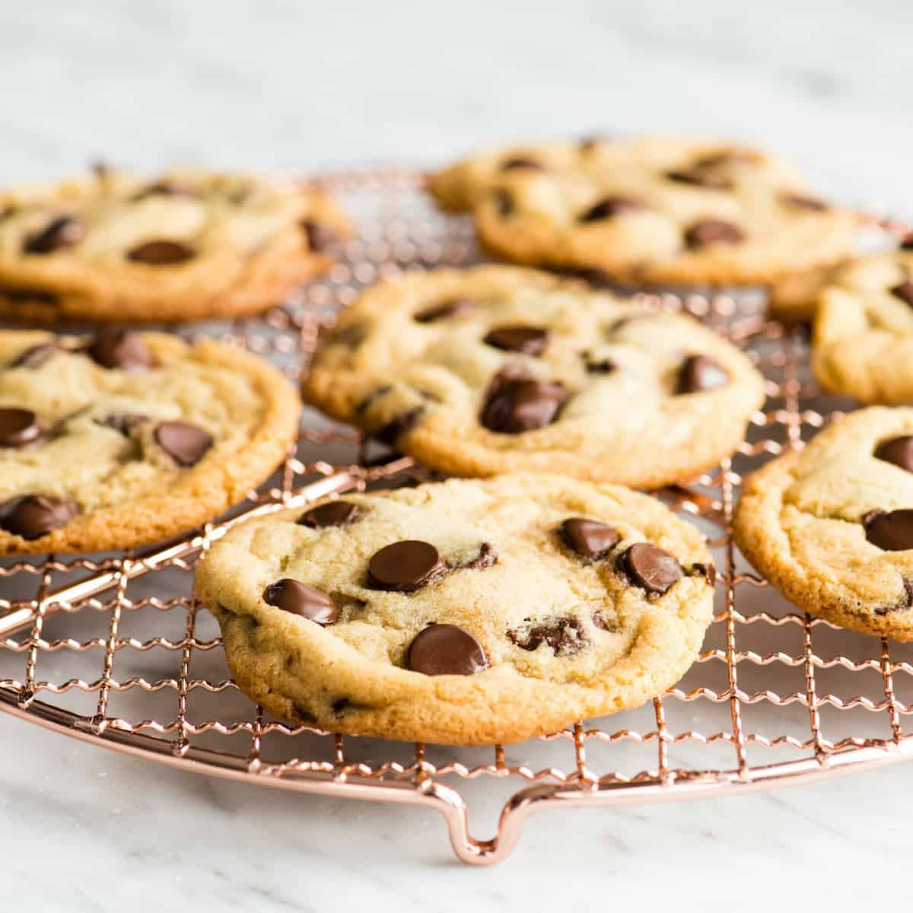
11. cookie1.jpeg
12. One chocolate chip cookie that is split in half.
13. cookie2.jpeg
14. One completely freshly baked chocolate chip cookie.
15. cookie3.jpeg
16. Seven chocolate chip cookies sitting on a rack.
17. Devin & Mia